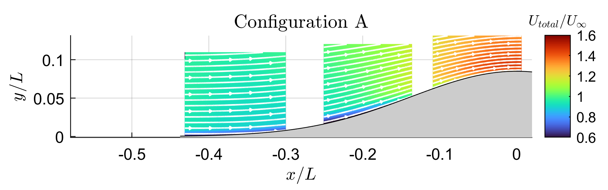
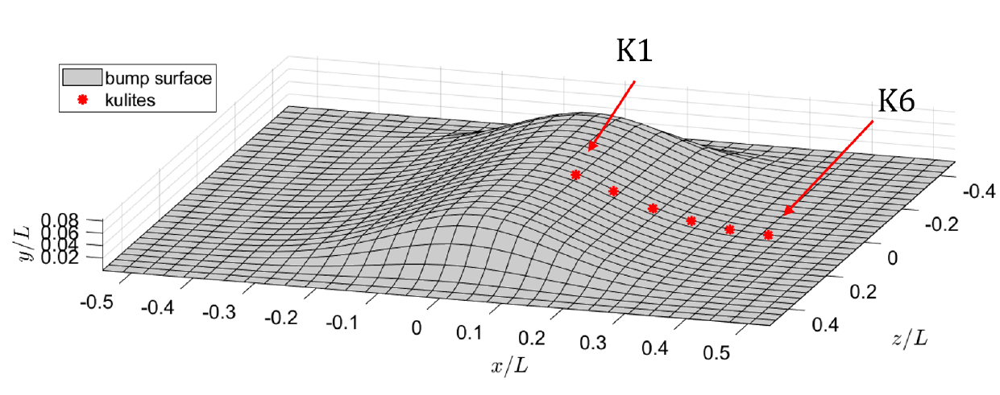

Public Access (formerly Langley Research Center)
Turbulence Modeling Resource
|
Exp: Smooth Body Separation
Experiment (SBSE) - Boeing Gaussian Bump with Error Function Shoulders
(also known as Boeing Speed Bump)
Return to: Data from Experiments - Intro Page
Return to: Turbulence Modeling Resource Home Page
The data on this page were provided by
Joseph Straccia and
Patrick Gray.
High-Level Table of Contents:
- Test Program Summary
- Wind Tunnel Description and Layout
- Geometry Definition
- Bump Model Parametric Representation
- CAD Definitions
- CMM Data
- Steps and Surface Roughness
- Experimental Conditions
- Experimental Data
- Notes on Data Format
- Guide to Importing the Data
- Empty Test Section Data
- Splitter Plate Only Data (No Bump)
- Bump Installed Data
- List of Related CFD Papers
1. Test Program Summary
A geometry named the Boeing Bump was conceived in 2015 with the goal of producing a highly separated flow
region downstream of the bump apex while minimizing the tunnel sidewall boundary layer interactions
that have previously been the cause of coupling between the flow separation and the corner flow physics.
The three-dimensional wall mounted bump model initially accelerates the flow due to a favorable pressure
gradient (FPG) and then quickly decelerates the flow in an adverse pressure gradient (APG) region to
induce a strong separated flow region. A three-year test campaign conducted at the University of Notre
Dame between 2020 and 2023 sought to explore the flow characteristics that give rise to the highly
turbulent, three-dimensional separation downstream of the bump apex. The goals, methods and results
of the Smooth Body Separation Experiment (SBSE) are documented in detail in the test reports available here:
Additional documentation can be found in the following publications:
Gray, P. D., Lakebrink, M., Straccia, J., Thomas, F.,
Corke, T., Gluzman, I., "Experimental and Computational Evaluation of Smooth-Body Separated Flow over Boeing Bump,"
AIAA Paper 2023-3981, Jun 2023,
https://doi.org/10.2514/6.2023-3981.
Gluzman, I., Gray, P., Mejia, K., Corke, T. C.,
and Thomas, F. O.,
"A Simplified Photogrammetry Procedure in Oil-film Interferometry for Accurate Skin Friction Measurement over Arbitrary Geometries,"
Experiments in Fluids, Vol. 63, Article No. 118, 2022,
https://doi.org/10.1007/s00348-022-03466-x.
Gray, P., Gluzman, I., Thomas, F., Corke, T.,
Mejia, K.,
"Characterization of Separated Flow over the Boeing Bump,"
AIAA Paper 2022-3342, June-July 2022,
https://doi.org/10.2514/6.2022-3342.
Gray, P., Gluzman, I., Thomas, F., Corke, T.,
Mejia, K.,
"Experimental Characterization of Smooth Body Flow Separation
OverWall-Mounted Gaussian Bump,"
AIAA Paper 2022-1209, January 2022,
https://doi.org/10.2514/6.2022-1209.
Gray, P., Gluzman, I., Thomas, F., Corke, T.,
Lakebrink, M. T., Mejia, K.,
"A New Validation Experiment for Smooth-Body Separation,"
AIAA Paper 2021-2810, August 2021,
https://doi.org/10.2514/6.2021-2810.
A zip file containing all geometry definition
and data files from the experiment can be downloaded here. The download size is 3.1 GB.
Alternatively,
smaller zip files containing specific data types are linked in the following subsections of the web page.
2. Wind Tunnel Description and Layout
The experiments were conducted in the University of Notre Dame's Mach 0.6 closed-loop wind tunnel.
The tunnel has a test section with a 0.91 x 0.91 m square cross section that extends 2.73 m in the
flow direction. Turbulence management consists of a honeycomb section followed by five seamless,
low-solidity screens, resulting in a turbulence intensity level of approximately 0.05% throughout
the tunnel Mach number range. The tunnel's turning vanes act as heat exchangers through which
water from a 125 ton chiller coupled with a 1000 ton-hr ice-storage system is pumped. This
allows the tunnel temperature to equilibrate to within 1 degree C for experimental runs up
to M = 0.5. The test facility is discussed in
Section 2.1 of the test report.
The bump model was installed into a 2.64m long splitter plate with a 4:1 elliptical leading edge and an
adjustable trailing edge flap, although the flap angle was fixed throughout the experiments.
Customized CADCUT cylindrical trip dots (flat top with sharp edges) that were 0.292 mm tall, 1.27 mm
in diameter and spaced 2.5 mm between centers were placed 51 mm downstream of the elliptical leading
edge (and the upstream edge of the removable test section) on the splitter plate surface and along the
interior sidewalls and ceiling of the wind tunnel test section. The trip dots were present for the
splitter plate and bump installed testing but not for the empty test section qualification
measurements. See
Section 2.2
in the test report for more details on the splitter plate and trip dots.
3. Geometry Definition
3.1. Bump Model Parametric Representation
The Boeing Bump geometry consists of a surface whose height is a Gaussian function in the streamwise direction,
x, and is tapered in the spanwise direction, z, by an error function to give the bump its "shoulders."
For the geometric parameters, the model uses L = 36 inches = 0.9144 m (the width of the tunnel), x0/L = 0.195,
z0/L = 0.06, and h/L = 0.085.
Section 2.2
in the test report describes the bump model.
3.2. CAD Definitions
3.2.1. Bump Geometry
The following files provide the definition for the bump alone at the test scale (L=0.9144m).
The two files represent the test model which was fabricated with one half wider that the other
so that the joining seam was off centerline. Therefore, the left-hand side and right-hand side
definitions are not exact halves of the configuration. Files are in IGS format.
3.2.2. Wind Tunnel Test Section, Splitter Plate and Bump Model
The following assembly includes the test section walls, the splitter plate with the leading edge
ogive and trailing edge flap, the wall seals and the bump installed with its apex 0.9144m
(Xapex/L=1) downstream from the splitter plate leading edge (i.e., Configuration A). Note that the
orientation of this CAD assembly is different than the bump alone files. Like with the CAD of the
bump alone, the bump CAD definition comes in two pieces, with the joining seam offset from the tunnel
centerline. Files are in IGS, X_T, STEP and SLDASM formats.
3.2.3. Wind Tunnel Contraction and Downstream Extension
The following assemblies include the wind tunnel contraction, the test section walls and a downstream extension.
In the test section the splitter plate with the leading-edge ogive and trailing edge flap is installed including
the definition for the mounting L-brackets and plate mounting fixtures. In one assembly the bump model apex
is located 0.9144 m (Xapex/L=1) downstream from the splitter plate leading edge (Configuration A) and in the
other the bump apex is located 1.8288 m (Xapex/L=2) downstream from the leading edge (Configuration B).
Files are provided in IGS format.
3.3 CMM Data
The as-manufactured geometry was verified with a coordinate measuring machine (CMM). The measured contours were
confirmed to be within +-0.125 mm of the CAD model for each of the plate sections.
Reports containing the CMM measurements can be downloaded here:
3.4 Steps and Surface Roughness
The test article including the splitter plate and bump sections were fabricated with a surface roughness
RMS approx 305 micrometer. The steps between plates were measured to be < 0.063 mm.
A more detailed report of the panel step and surface finish measurements can be downloaded here:
4. Experimental Conditions
The wind tunnel experiments were conducted in air at ambient conditions. Although cooling via the turning
vanes was utilized during the experiments its purpose was to hold air temperature to within a 1 degree
C band within the wind tunnel. Details on the reference conditions within the test section during a
specific measurement are documented in the header section of the corresponding data file.
Two aerodynamic parameters were varied in the experiments to understand their influence on smooth
body separation. The first was the flow Mach number or Reynolds number which was varied by changing the
air speed via the fan RPM. For most measurements the emphasis was on M=0.1 and M=0.2, however, in several
cases data were obtained across a larger set of conditions. The following table lists all Mach numbers
tested along with the corresponding free steam velocity and Reynolds number (based on the test section width).
The second aerodynamic parameter varied was the boundary layer thickness upstream of the bump.
This was varied independently of freestream velocity by placing the bump at different locations on the
splitter plate so that the boundary layer had more or less distance to develop. Accordingly,
two bump configurations were tested in this experimental study: configuration A where the bump
apex was postitioned one test section width downstream from the splitter plate leading edge and
configuration B where the bump apex was two test section widths downstream from the leading edge.
An emphasis was placed on obtaining data with the bump in configuration A.
Section 2.3
of the test report provides information on the coordinate systems and notation for the bump configurations tested.
See Section 4.1
of the test report for details on the experimental test conditions.
5. Experimental Data
5.1. Notes on Data Format
All experimental data are provided in human-readable ASCII DAT file format (.dat). The beginning of these
files includes a commented block of text which specifies the bump geometry, test configuration, references
conditions, derived quantities and variable name descriptions, with units. The data table consists of a
single uncommented line with the parameter names followed by the data itself. These DAT files are readable
by Microsoft Excel, MATLAB, Python and Tecplot. Additionally, the PIV and Kulite data are also provided
in binary MATLAB MAT file format (.mat). The MAT files have smaller file sizes than the DAT files and
for the PIV data the MAT file format preserves the 2D array structure whereas the DAT files store the
2D data as 1D arrays which have to reshaped after import. The MAT files can be read by MATLAB and Python.
Two coordinate systems are utilized in the data files. First, a right-handed global coordinate system
with respect to the test section is denoted using capital X, Y, and Z to represent streamwise, vertical,
and spanwise distances from its origin, respectively. The origin of the global coordinate system is
located at the inlet of the test section, on the bottom wall, and at the center span between the left
and right side walls. Second, a right-handed bump-based coordinate system is implemented when distances
with respect to the bump are referenced, regardless of the global position of the bump apex. Here,
lower case symbols x, y, and z represent streamwise, vertical, and spanwise directions, respectively.
The origin of the bump-centric coordinate system is in the same streamwise plane as the bump apex, and
located vertically at the top surface of the flat plate, and at the center span of the tunnel between
the left and right side walls. For data files where the filename includes the position of the measurement
the global coordinate system (X,Y,Z) is used. Within the data files the data coordinates are provided
in both the global (X,Y,Z) and bump-centric (x,y,z) coordinate systems.
5.2. Guide to Importing the Data
5.2.1. Importing .dat files into MATLAB
Generally, the .dat files can be imported into MATLAB by simply entering data=readtable('filename.dat'); in
the command window. For some files MATLAB does not correctly handle the commented header section and
throws an error. Therefore, a more robust way to import the data is to use the following commands in an m-file.
infile = 'EmptyTunnel_TotalPressureBL_X486mmProfileB_M0p10.dat';
comment= '%';
S=readlines(infile);
ch = S{1};, line=1;
while ch(1) == comment
line = line + 1;
ch = S{line};
end
clear S
data=readtable(infile,'NumHeaderLines',line-1);
Data are then accessed from the structure using data.variablename, e.g., data.U.
PIV data which are obtained as a 2D array will import from DAT files as 1D vectors. The following is an example of how to
reshape and plot the SPIV data:
data = readtable('BumpConfigA_SPIVcrossplanes_X1143mm_M0p200.dat');
ydim = length(unique(data.y_L)); zdim = length(unique(data.z_L));
zL = reshape(data.z_L,ydim,zdim);
yL = reshape(data.y_L,ydim,zdim);
U = reshape(data.U,ydim,zdim);
figure
contourf(zL,yL,U,256,'EdgeColor','none')
c = colorbar;
title(c,'$U$ [m/s]','interpreter','latex');
axis equal
xlabel('$z/L$','interpreter','latex')
ylabel('$y/L$','interpreter','latex')
5.2.2. Importing .mat files into MATLAB
MAT files are imported into MATLAB by entering load('filename.mat') in the command window.
Data are then accessed from the structure using data.variablename, e.g., data.U.
5.2.3. Importing .dat files into Python
The following commands will import the data in the .dat file and preserve parameter names while ignoring commented lines in the header.
import numpy as np
from io import StringIO
infile = 'EmptyTunnel_TotalPressureBL_X486mmProfileB_M0p10.dat'
input_data = open(infile,'r')
input_text = ''
comment = '%'
for line in input_data:
if not line[0] == comment:
input_text += line
data = np.genfromtxt(StringIO(input_text),delimiter='\t',names=True)
Data are then accessed from the structure using data['VariableName'], e.g. data['U'].
5.2.4. Importing .mat files into Python
import scipy.io
mat = scipy.io.loadmat('filename.mat')
5.2.5. Importing .dat files into Tecplot
Open the .dat file in a text editor and note the line number with the variable names and the line number of the first row of the data table.
Within Tecplot click File > Load Data... and navigate to the .dat file. Under Files of type
select All Files (*) if not already in that mode and click on the .dat file and then Open.
Under loader type select General Text Loader and then OK. Click Variables button and in the variables
window select Scan for Variable Names radio button and enter the line number of the variables in both the
Start Line and End Line boxes then press OK (the delimiter can be left as Auto).
Next click the Data button and in the data window enter the line number of the first row of the data table under
Start Line and select End of File radio button for the end line then click OK
(delimited can be left as Auto). Under Data Preview select the View Processed Data
radio button and then click Scan File. The data table should appear in the display window. Click OK.
The data should now be available for plotting in Tecplot under the Mapping Style dialog.
5.2.6. Importing .dat files into Microsoft Excel
Within Excel click File > Open and navigate to the .dat file location. Change the file type drop down from
All Excel Files to All Files (*.*). Click on the desired .dat file and click Open.
Under Original data type select Delimited then click Next. Under Delimiters check only the
Tab box then click Next. Under Column data format leave the radio button on General then click Finish.
Alternatively, the .dat file can be opened in a text editor (e.g. notepad, notepad++, etc) and the contents selected and copied.
Next within Excel, right click in the cell A1 and select paste. Excel will automatically apply a
tab delimiter when pasting the .dat file contents.
5.3. Empty Test Section Data
Prior to installation of the test article, an investigation of the empty test section was conducted to
quantify incoming flow quality. See
Section 3.1
in the test report for more information on this test phase.
5.3.1. Pitot-Static Rakes: Freestream Velocity
A traversing Pitot-static probe was used to investigate the uniformity of the empty test section
flow prior to installation of the test model or fixtures. Measurements were made at M=0.2. See
Section 3.1.1
in the test report for more information on the data obtained.
A zip file containing the flow velocity data obtained with the pitot-static probe in the empty test section can be downloaded here:
5.3.2. X-Wire: Three-Component Freestream Velocity and Turbulence Intensity
A traversing X-wire probe was used to investigate the freestream angularity and turbulence intensities within the
empty test section prior to installation of the test model or fixtures. The measurements were made at
M=0.1 and 0.2. See
Section 3.1.2
in the test report for more information on the data obtained.
A zip file containing the flow velocity data obtained with the X-wire probe can be downloaded here:
5.3.3. Total Pressure Probe: Test Section Wall Boundary Layer Measurements
A traversing total pressure boundary layer style probe was used to investigate the boundary layer development
on each of the four test section walls prior to the installation of the test model or fixtures. The
measurements were made at M=0.05, 0.1 and 0.2. See
Section 3.1.3
in the test report for more information on the data obtained. The
following figure visually depicts where the boundary layer profiles were measured within the empty test section.
A zip file containing the boundary layer profiles obtained on the empty test section walls using a total pressure probe can be downloaded here:
5.4. Splitter Plate Only Data (No Bump)
After the first test phase investigating the flow quality within the empty test section, the
splitter plate and associated fixtures were inserted into the test section. Without the bump installed, the
test bed consisted only of flat plate sections which allowed canonical boundary layer development with near
zero pressure gradient. See
Section 3.2
in the test report for more information on this test phase.
5.4.1. Hot-wire: Splitter Plate Boundary Layer Profiles
The hot-wire anemometry and traversing system described in
Section 2.4.3 in the
test report was used to obtain mean velocity profiles of the boundary layer on the splitter plate. The measurements were
made at M=0.1 and 0.2 for the splitter plate only configuration. See
Section 3.2.2
in the test report for more information on the data obtained. The following figure visually depicts
where the hot-wire data were obtained within the test section.
A zip file containing the boundary layer profiles obtained on the splitter plate using hot-wire anemometry can be downloaded here:
5.4.2. Oil Film Interferometry (OFI): Splitter Plate Skin Friction
The photogrammetric OFI technique described in
Section 2.4.4
in the test report was used to measure skin friction on the splitter plate prior to bump installation.
The measurements were made at M=0.2 for the splitter plate only configuration. See
Section 3.2.3
in the test report for more information on the data obtained. A zip file containing the skin friction
measurements obtained on the splitter plate using OFI can be downloaded here:
5.5. Bump Installed Data
To achieve the core objective of this program, a series of flow diagnostics were conducted with the
speed bump model installed in the splitter plate. A high-level tabular summary of all experimental data
obtained with the bump model installed is provided in the following table which shows the flow speeds tested
using each of the diagnostic tools. The table also specifies the bump configuration tested at the reference
condition (A, B, or both). The quantities measured and corresponding experimental techniques employed
include: the boundary layer profiles using the hot-wire anemometry system (HW), the flow fields upstream
of the bump using SPIV (SPIV), the surface streamlines in the separated flow region using flow visualization
oil (FlowViz), the mean and instantaneous static pressure over the bump (Cp and Kulite, respectively),
the mean skin friction over the bump (Cf ), the separated flow field downstream of the bump using PIV (PIV),
and the separated flow field downstream of the bump in cross-planes using SPIV (SPIVcross). Additional data
summary tables are provided at the start of each of the following subsections which indicate the specific
locations where data were obtained within the flow field for the measurement type being discussed.
Section 2.3
of the test report provides information on the coordinate systems and notation for the bump configurations tested.
See Section 4.1
of the test report for details on the experimental test conditions.
5.5.1. Hot-wire: Upstream Boundary Layer Profile Development
The hot-wire anemometry and traversing system described in
Section 2.4.3 of the
test report was used to obtain mean velocity and turbulence profiles of the boundary layer upstream of the bump apex on centerline.
See Section 4.2.1
in the test report for more information on the data obtained.
The following table outlines where hot-wire data were obtained and for what conditions:
The following figure visually depicts where the hot-wire data were obtained relative to the bump:
A zip file containing the hot-wire data obtained upstream of the bump can be downloaded here:
5.5.2. Stereoscopic PIV (SPIV): Upstream Flow Field Development on Centerline
The upstream SPIV setup described in
Section 2.4.6.2 of the
test report was used to measure the mean velocities and Reynolds stresses upstream of the bump apex. See
Section 4.2.2
in the test report for more information on the data obtained.
The following table outlines where SPIV data were obtained and for what conditions.
The following figures visually depict where the SPIV data were obtained relative to the bump.

A zip file containing the SPIV data obtained upstream of the bump can be downloaded here:
5.5.3. Fluorescent Oil Flow Visualization: Bump Surface Streamlines Within the Separation
The fluorescent oil mixture described in
Section 2.4.1
was applied to the downstream region of the bump to visualize the time-mean surface streamlines produced by the separated flow.
See Section 4.3
in the test report for more information on the images obtained.
The following figure is an example fluorescent oil flow image obtained at M=0.2 for Configuration A.
In the image the apex of the bump is indicated by the annotation and the bump centerline is delineated with three parallel orange lines.
The location of the surface foci at M=0.2 for Configuration A were extracted by applying a
photogrammetry technique to map the fluorescent oil flow image onto the 3D bump surface.
The foci locations are provided below in local bump-relative coordinates and have an
estimated uncertainty of +/-2mm, based on how the center of the foci were visually identified.
F1: (x,z) = (124.7, 113.8) mm
F2: (x,z) = (129.3, -109.6) mm
Fluorescent oil flow images are provided for both configuration A and B at M=0.1 and M=0.2.
A zip file containing the images can be downloaded here:
5.5.4. Pressure Taps: Bump Surface Static Pressure
The static pressure taps described in
Section 2.4.7.1
of the test report were used to measure the mean surface pressure field along the bump.
The ports were aligned on five arrays, three arrays in the streamwise direction and two arrays in the spanwise direction.
See Section 4.4.1
in the test report for more information on the data obtained.
The following table outlines where the static pressure data were obtained and for what conditions.
The following figure visually depicts where the static pressure data were obtained on the bump.
A zip file containing the static pressure data obtained on the bump can be downloaded here:
5.5.5. Kulites: Bump Surface Dynamic Pressure
The Kulite dynamic pressure sensors described in
Section 2.4.7.2
of the test report were used to measure instantaneous pressure fluctuations downstream of the bump apex.
See Section 4.4.2
in the test report for more information on the data obtained.
The following table outlines where the dynamic pressure data were obtained and for what conditions.
The following figure visually depicts where the Kulite sensors were installed on the bump.

A zip file containing the dynamic pressure data obtained on the bump can be downloaded here:
5.5.6. Oil Film Interferometry (OFI): Bump Surface Skin Friction
The photogrammetric OFI technique described in
Section 2.4.4
in the test report was used to measure the skin friction coefficient along the bump.
See Section 4.5
in the test report for more information on the data obtained.
The following figure depicts an example distribution of OFI measurements along the splitter plate and bump.
The OFI measurements were made at M=0.05, 0.1 and 0.2 for bump configurations A and B.
A zip file containing the skin friction measurements obtained on the bump using OFI can be downloaded here:
5.5.7 Particle Image Velocimetry (PIV): Downstream Flow Field on Streamwise Planes
The PIV setup described in
Section 2.4.5
of the test report was used to measure two-component mean velocity and
Reynolds stresses in the separated flow region downstream of the bump apex.
See Section 4.6
in the test report for more information on the data obtained.
The following table outlines where the downstream PIV data were obtained and for what conditions.
The following figure visually depicts on what planes PIV data were obtained on the downstream side of the bump.
A zip file containing the downstream PIV data can be downloaded here:
5.5.8 Stereoscopic PIV (SPIV): Downstream Flow Field on Cross-Planes
The cross planar SPIV setup described in
Section 2.4.6.1
was used to measure three-component mean velocity and Reynolds stresses downstream of the bump apex.
See Section 4.7
in the test report for more information on the data obtained.
The following table outlines where the downstream SPIV data were obtained and for what conditions.

The following figure visually depicts on what planes SPIV data were obtained on the downstream side of the bump.
A zip file containing the downstream SPIV data can be downloaded here:
6. List of Related CFD Papers
The following is a list of known CFD papers that report scale-resolving computations of the SBSE configuration (including
both the full configuration as well as a centerplane or center-region "slice").
DNS (Direct Numerical Simulation) Papers:
- Uzun, A., Malik, M. R. (2021). Simulation of a turbulent flow subjected to favorable and adverse pressure gradients.
Theoretical and Computational Fluid Dynamics, 35, 293-329,
https://doi.org/10.1007/s00162-020-00558-4.
DNS data from this paper is provided on the page:
DNS: Gaussian Bump at Two Reynolds Numbers
- Shur, M. L., Spalart, P. R., Strelets, M. K., Travin, A. K. (2021). Direct numerical simulation of the
two-dimensional speed bump flow at increasing Reynolds numbers. International Journal of Heat and Fluid Flow, 90, 108840,
https://doi.org/10.1016/j.ijheatfluidflow.2021.108840.
- Balin, R., Jansen, K. E. (2021). Direct numerical simulation of a turbulent boundary layer over a bump with
strong pressure gradients. Journal of Fluid Mechanics, 918, A14,
https://doi.org/10.1017/jfm.2021.312.
- Uzun, A., Malik, M. R. (2022). High-fidelity simulation of turbulent flow past Gaussian bump.
AIAA Journal, 60(4), 2130-2149,
https://doi.org/10.2514/1.J060760.
DNS data from this paper is provided on the page:
DNS: Gaussian Bump at Two Reynolds Numbers
WRLES (Wall-Resolved Large-Eddy Simulation) Papers:
- Wright, J. R., Balin, R., Jansen, K. E., Evans, J. A. (2021). Unstructured LES_DNS of a turbulent boundary
layer over a Gaussian bump. In AIAA Scitech 2021 Forum (AIAA-2021-1746),
https://doi.org/10.2514/6.2021-1746.
- Uzun, A., Malik, M. R. (2022). A Dynamic Nonlinear Subgrid-Scale Model for Large-Eddy Simulation
of Complex Turbulent Flows, NASA/TM-20220013891,
https://ntrs.nasa.gov/citations/20220013891.
- Rizzetta, D. P., Garmann, D. J. (2023). Wall-resolved large-eddy simulation of flow over a
three-dimensional gaussian bump. In AIAA SCITECH 2023 Forum (AIAA-2023-0286),
https://doi.org/10.2514/6.2023-0286.
- Rizzetta, D. P., Garmann, D. J. (2023). Wall-Resolved Large-Eddy Simulation of Flow over a Parametric
Set of Gaussian Bumps. In AIAA AVIATION 2023 Forum (AIAA-2023-3983),
https://doi.org/10.2514/6.2023-3983.
- Rizzetta, D. P., Garmann, D. J. (2023). Arch Vortex in Flow over a Three-Dimensional Gaussian Bump.
AIAA Journal, 61(11), 5176-5179,
https://doi.org/10.2514/1.J062876.
WMLES/DDES (Wall-Modeled Large-Eddy Simulation/Delayed Detached Eddy Simulation) Papers:
- Balin, R., Jansen, K. E., Spalart, P. R. (2020). Wall-modeled LES of flow over a Gaussian bump with
strong pressure gradients and separation. In AIAA Aviation 2020 Forum (AIAA-2020-3012),
https://doi.org/10.2514/6.2020-3012.
- Iyer, P. S., Malik, M. R. (2021). Wall-modeled LES of flow over a Gaussian bump.
In AIAA Scitech 2021 Forum (AIAA-2021-1438),
https://doi.org/10.2514/6.2021-1438.
- Gray, P. D., Gluzman, I., Thomas, F., Corke, T., Lakebrink, M., Mejia, K. (2021). A new validation
experiment for smooth-body separation. In AIAA Aviation 2021 Forum (AIAA-2021-2810),
https://doi.org/10.2514/6.2021-2810.
- Whitmore, M. P., Griffin, K. P., Bose, S. T., Moin, P. (2021). Large-eddy simulation of a Gaussian
bump with slip-wall boundary conditions. Center for Turbulence Research Annual Research Briefs, 45-58,
https://web.stanford.edu/group/ctr/ResBriefs/2021/06_Whitmore.pdf.
- Agrawal, R., Whitmore, M., Griffin, K., Moin, P. (2021). Dynamic modeling of non-Boussinesq
subgrid-scale models for large-eddy simulations. Center for Turbulence Research Annual Research Briefs, 31-43,
https://web.stanford.edu/group/ctr/ResBriefs/2021/05_Agrawal.pdf.
- Prakash, A., Balin, R., Evans, J. A., Jansen, K. E. (2022). Wall-modeled large eddy simulations of a
turbulent boundary layer over the Boeing speed bump at ReL= 2 million. In AIAA SciTech 2022 Forum (AIAA-2022-0338),
https://doi.org/10.2514/6.2022-0338.
- Iyer, P. S., Malik, M. R. (2022). Wall-modeled LES of turbulent flow over a two
dimensional Gaussian bump. ICCFD11 Paper, 204, 2022,
https://www.iccfd.org/iccfd11/assets/pdf/papers/ICCFD11_Paper-0204.pdf.
- Agrawal, R., Bose, S. T., Moin, P. (2022). Wall modeled LES of the Boeing speed bump using a
non-Boussinesq modeling framework. Center for Turbulence Research, Annual Research Briefs, 43-58,
https://web.stanford.edu/group/ctr/ResBriefs/2022/06_Agrawal.pdf.
- Agrawal, R., Whitmore, M. P., Griffin, K. P., Bose, S. T., Moin, P. (2022). Non-Boussinesq subgrid-scale
model with dynamic tensorial coefficients. Physical Review Fluids, 7(7), 074602,
https://doi.org/10.1103/PhysRevFluids.7.074602.
- Iyer, P. S., Malik, M. R. (2023). Wall-modeled LES of the three-dimensional speed bump
experiment. In AIAA SCITECH 2023 Forum (AIAA-2023-0253),
https://doi.org/10.2514/6.2023-0253.
- Gray, P. D., Lakebrink, M. T., Thomas, F. O., Corke, T. C., Gluzman, I., Straccia, J. (2023). Experimental
and Computational Evaluation of Smooth-Body Separated Flow over Boeing Bump. In AIAA AVIATION 2023 Forum (AIAA-2023-3981),
https://doi.org/10.2514/6.2023-3981.
- Arranz, G., Ling, Y., Lozano-Duran, A. (2023). Wall-modeled LES based on building-block flows:
Application to the Gaussian Bump. In AIAA AVIATION 2023 Forum (AIAA-2023-3984),
https://doi.org/10.2514/6.2023-3984.
- Zhou, D., Whitmore, M. P., Griffin, K. P., Bae, H. J. (2023). Large-Eddy Simulation of Flow over Boeing
Gaussian Bump Using Multi-Agent Reinforcement Learning Wall Model. In AIAA AVIATION 2023 Forum (AIAA-2023-3985),
https://doi.org/10.2514/6.2023-3985.
- Iyer, P. S., Malik, M. R. (2023). Assessing Reynolds Number Effects for flow over a Gaussian bump
using Wall-modeled LES. In AIAA AVIATION 2023 Forum (AIAA-2023-3982),
https://doi.org/10.2514/6.2023-3982.
Acknowledgements
The Boeing bump model geometry was developed by Philippe Spalart
(Senior Technical Fellow, the Boeing Company, Retired) in close
collaboration with Jeffrey Slotnick (Technical Fellow, the Boeing Company)
and the New Technologies and Services (NTS) group under Professor Strelets
in St. Petersburg. The wind tunnel experiments were conducted by the
University of Notre Dame. Program oversight and accompanying CFD analysis
performed by Boeing Research & Technology.
This work was funded through a cooperative agreement between the
Office of Naval Research, the National Aeronautics and Space Administration,
the Army Research Office, the Air Force Research Lab, and The Boeing Company.
Government funding for the work was provided through ONR Cooperative
Agreement No. N00014-20-2-1002. Any opinions, findings, and conclusions
or recommendations expressed in this material are those of the authors
and do not necessarily reflect the views of the Office of Naval Research.
Return to: Data from Experiments - Intro Page
Return to: Turbulence Modeling Resource Home Page
Recent significant updates:
02/09/2024 - updated the experimental test report, and added the CFD test report
08/28/2023 - posted final data
Page Curators: Christopher Rumsey,
Ethan Vogel,
Clark Pederson
Last Updated: 10/08/2024